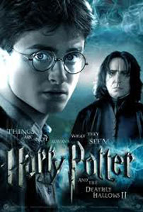
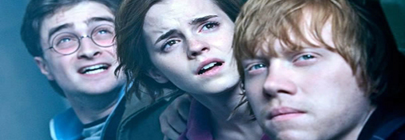
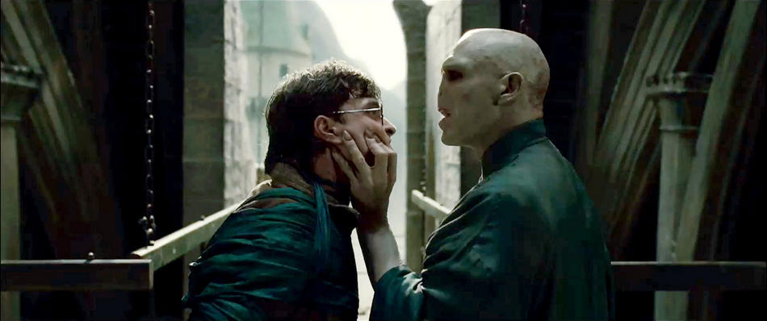

Review Harry Potter And The Deathly Hallows Part 2
Minggu, 1 Desember 2013

This is it! Setelah sebuah usaha untuk sedikit memperpanjang usia franchise film Harry Potter dengan membagi dua bagian akhir dari kisah Harry Potter and the Deathly Hallows, dunia kini tampaknya harus benar-benar mengucapkan salam perpisahan mereka pada franchise yang telah berusia satu dekade dan memberikan tujuh seri perjalanan yang mengagumkan ini. Harry Potter and the Deathly Hallows – Part 2 memiliki nada penceritaan yang menyerupai bagian awal kisahnya – yang sekaligus membuktikan bahwa Harry Potter and the Deathly Hallows adalah sebuah kesatuan penceritaan yang unik sekaligus akan memberikan efek emosional yang lebih mendalam jika diceritakan dalam satu bagian utuh. Pun begitu, dengan apa yang ia hantarkan di …The Deathly Hallows – Part 2, David Yates akan mampu memenuhi ekspektasi setiap orang tentang bagaimana final dari salah satu kisah yang paling dicintai di muka Bumi akan berakhir.
Melanjutkan tepat di bagian dimana The Deathly Hallows – Part 1 berakhir – Harry Potter (Daniel Radcliffe), Ronald Weasley (Rupert Grint) dan Hermione Granger (Emma Watson) baru saja menguburkan Dobby yang terbunuh, The Order of the Phoenix berada dalam keadaan yang kacau balau, dan Voldemort (Ralph Fiennes) baru saja menemukan tongkat sihir terkuat yang pernah ada, The Elder Wand – ketiga sahabat tersebut harus melanjutkan perjalanan mereka dalam menemukan sisa dari horcrux (kepingan jiwa Voldemort) guna membantu usaha mereka untuk melemahkan kondisi Voldemort sehingga lebih mudah untuk dikalahkan.
Tentu saja, seperti yang digambarkan pada seri awalnya, perjalanan untuk mencari sisa kepingan horcrux bukanlah sebuah perjalanan yang mudah untuk dilaksanakan. Voldemort sendiri bersama pasukannya saat ini telah bersiap untuk menyerang dan menghancurkan Hogwarts yang dia nilai berisi orang-orang yang selalu mendukung Harry Potter dan berusaha untuk melawan dirinya. Dari permasalahan inilah jalan cerita …The Deathly Hallows – Part 2 kemudian akan dipenuhi banyak peperangan dan kematian.
Sementara itu, Harry Potter sendiri secara perlahan mulai menyibak masa lalu yang kelam dari kemagtian orangtuanya sekaligus menemukan berbagai titik terang yang dapat membantunya untuk melenyapkan Voldemort dan sekali lagi mengakhiri masa-masa kegelapan di dunia sihir.

Anda harus menempatkan diri Anda di posisi Steve Kloves, penulis naskah seri petualangan Harry Potter yang telah mengadaptasi seluruh karya J. K. Rowling (kecuali Harry Potter and the Order of the Phoenix, 2007). Untuk Harry Potter and the Deathly Hallows, Kloves harus mengadaptasi sebuah buku setebal lebih dari 700 halaman menjadi dua buah film yang berdurasi total hampir sepanjang 5 jam.
Bukan hal yang mudah, tentu saja, karena setiap halaman Harry Potter and the Deathly Hallows dipenuhi berbagai detil cerita yang cukup kompleks. Mau tidak mau, banyak dari bagian cerita tersebut yang harus dibuang dan tidak digunakan dalam versi filmnya. Hal inilah yang mungkin membuat beberapa karakter terkesan memiliki peran yang kurang begitu mampu ditonjolkan atau beberapa adegan yang terasa berjalan terlalu singkat.
The Deathly Hallows – Part 1 adalah bagian yang berjalan ibaratnya sebagai sebuah teori dalam sebuah pelajaran: bergerak lamban dan dipenuhi dengan banyak metode tanpa sebuah eksekusi yang berarti. 45 menit dari durasi awal …The Deathly Hallows – Part 2 masih terasa sebagai bagian dari seri pertamanya tersebut. Namun hal tersebut tidak berjalan begitu lama.
Ketika Voldemort dan kelompoknya mulai melakukan invasi kepada Hogwarts serta Harry dan kelompoknya bersiap untuk melakukan perlawanan, The Deathly Hallows – Part 2 kemudian bergerak dengan intensitas yang tinggi, dipenuhi dengan berbagai visual yang mengundang decak kagum dan pemerhatian detil yang begitu teliti. David Yates serta tim tata produksinya berhasil mempertahankan penampilan elegan yang ditampilkan deretan gambar di seri sebelumnya dan membuat …The Deathly Hallows – Part 2 benar-benar bagaikan sebuah film utuh yang dipotong menjadi dua bagian.

Banyak wajah-wajah lama penghuni Hogwarts yang kembali hadir dalam …The Deathly Hallows – Part 2. Beberapa dari mereka tampil dengan kapasitas cameo (Anda bahkan tidak akan menyadri kehadiran Emma Thompson jika mata Anda terlalu banyak berkedip) sementara beberapa lainnya diberikan peran yang lebih besar dari bagian-bagian sebelumnya (Maggie Smith dapat membuktikan bahwa karakternya bukan hanya mampu mengajar di kelas Hogwarts, Alan Rickman tenggelam dalam perannya yang menampilkan sebuah sisi lain dari Severus Snape dan Helena Bonham Carter tampil… well… sebagai Helena Bonham Carter yang akan mampu mengundang Anda untuk selalu mengagumi aktris Inggris tersebut).
Namun tentu saja, …The Deathly Hallows – Part 2 adalah sebuah penceritaan di mana para penonton dapat menyaksikan Harry Potter, Ronald Weasley dan Hermione Granger akhirnya tumbuh dewasa dan mengetahui posisi mereka sebenarnya dalam kehidupan.
Daniel Radcliffe, Rupert Grint dan Emma Watson telah tumbuh dewasa dengan memerankan tiga karakter ikonik ini sehingga penonton sepertinya akan mengalami masa-masa sulit untuk memikirkan bahwa …The Deathly Hallows – Part 2 adalah sebuah momen terakhir dimana mereka akan dapat menyaksikan ketiganya tampil bersama dalam sebuah film. …The Deathly Hallows – Part 2 mampu memberikan ketiga karakter sebuah momen perpisahan yang cukup menyentuh dan akan mampu dikenang dengan baik oleh setiap penontonnya.
Pujian besar tentu saja harus disematkan pada David Yates yang semenjak mengarahkan Harry Potter and the Order of the Phoenix (2007) selalu berhasil menanamkan kedalaman jalan cerita dan visual yang mengagumkan pada franchise ini. Kerjasamanya dengan sinematografer, Eduardo Serra, juga semakin mengukuhkan tampilan gambar seri Harry Potter and the Deathly Hallows sebagai seri Harry Potter dengan penampilan gambar yang terbaik di antara seri lainnya.
Komposer Alexander Desplat juga semakin menambah elegan penceritaan Harry Potter and the Deathly Hallows, membawakan tingkatan emosional yang lebih dalam namun tetap terhindar dari kesan sentimentalitas yang berlebihan.
Dua bagian Harry Potter and the Deathly Hallows sayangnya bukanlah seri terbaik dari franchise yang telah berusia satu dekade ini. Franchise ini telah menemui masa keemasannya ketika Alfonso Cuarón mengarahkan Harry Potter and the Prisoner of Azkaban (2004) yang menjadi tonggak dimana franchise ini bergerak dari sebuah film petualangan popcorn menjadi sebuah kisah penceritaan yang kelam dan mencekam. Pun begitu, seperti halnya seri-seri Harry Potter lainnya, …The Deathly Hallows – Part 2 tidak pernah tampil mengecewakan.
Mereka memang tidak pernah tampil dengan jalan penceritaan yang begitu mendalam dan emosional layaknya versi film dari The Lord of the Rings (2001 – 2003), namun mereka secara konsisten mampu tampil menghibur dan memberikan sebuah petualangan yang begitu mengagumkan, menyentuh dan mampu memberikan penontonnya sebuah pengalaman tersendiri.
Sebagai sebuah bagian tersendiri, …The Deathly Hallows – Part 2 memberikan sedikit perbaikan dari seri sebelumnya dengan menghadirkan banyak adegan dan visual berintensitas tinggi. Namun secara keseluruhan, Harry Potter and the Deathly Hallows adalah sebuah seri akhir yang mampu menjawab setiap ekspektasi penontonnya akan sebuah akhir dari salah satu seri petualangan terbaik yang pernah hadir di layar lebar.